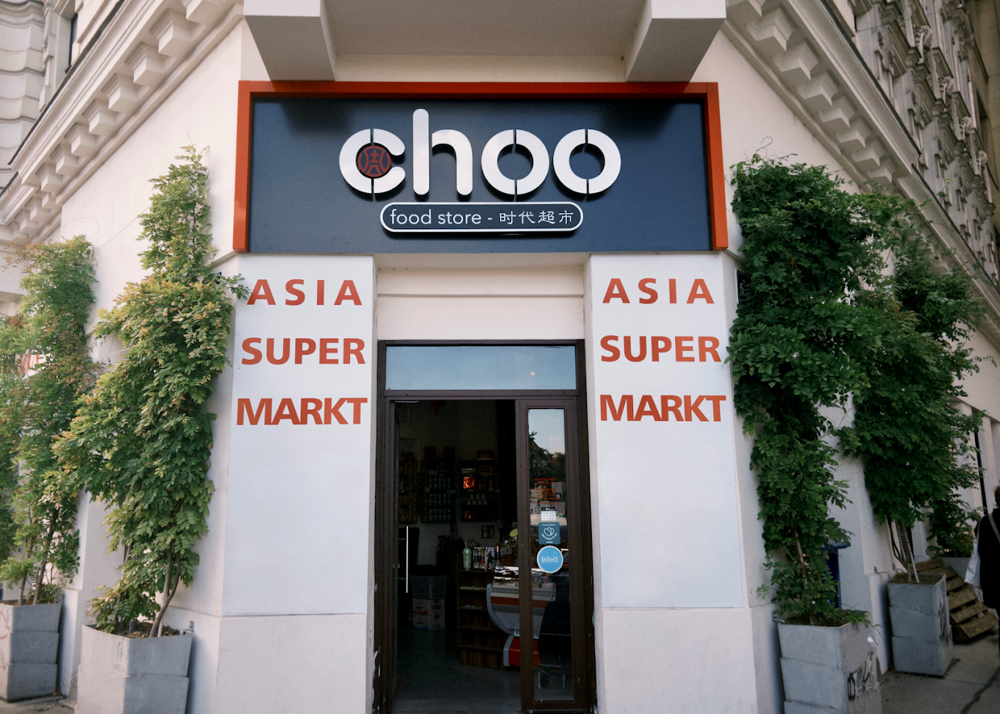

Unser Markt
Asien, sorgfältig sortiert.
Über 3.000 Produkte aus China, Japan, Korea, Vietnam und ganz Südostasien, von der Sojasauce bis zum Reiskocher. Übersichtlich, sauber, gut beraten.
Wir kuratieren das Sortiment selbst und beraten dich gerne, egal ob es um die richtige Sojasauce, eine bestimmte Paste oder ein Geschenk geht.
Mehr erfahren